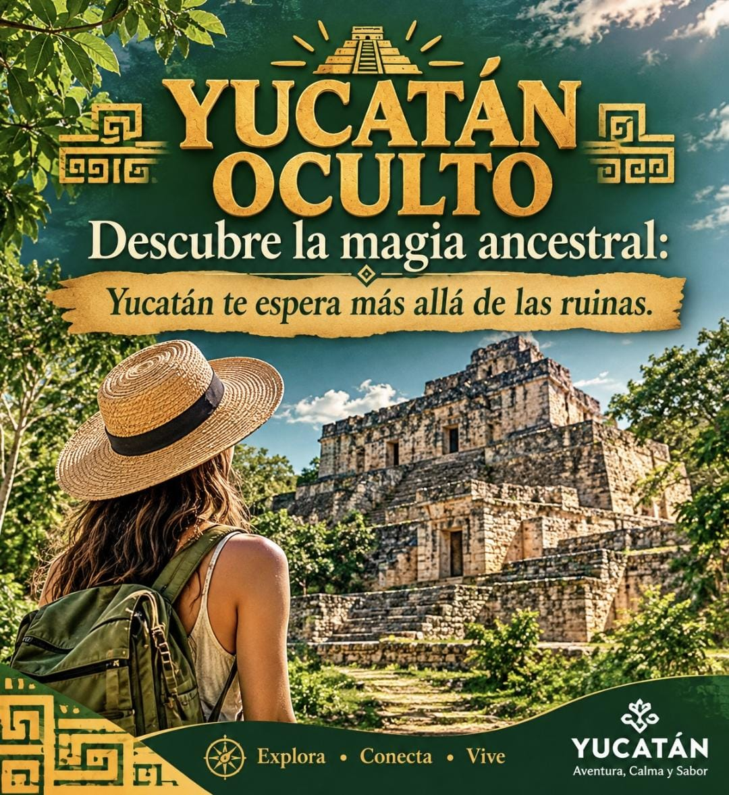
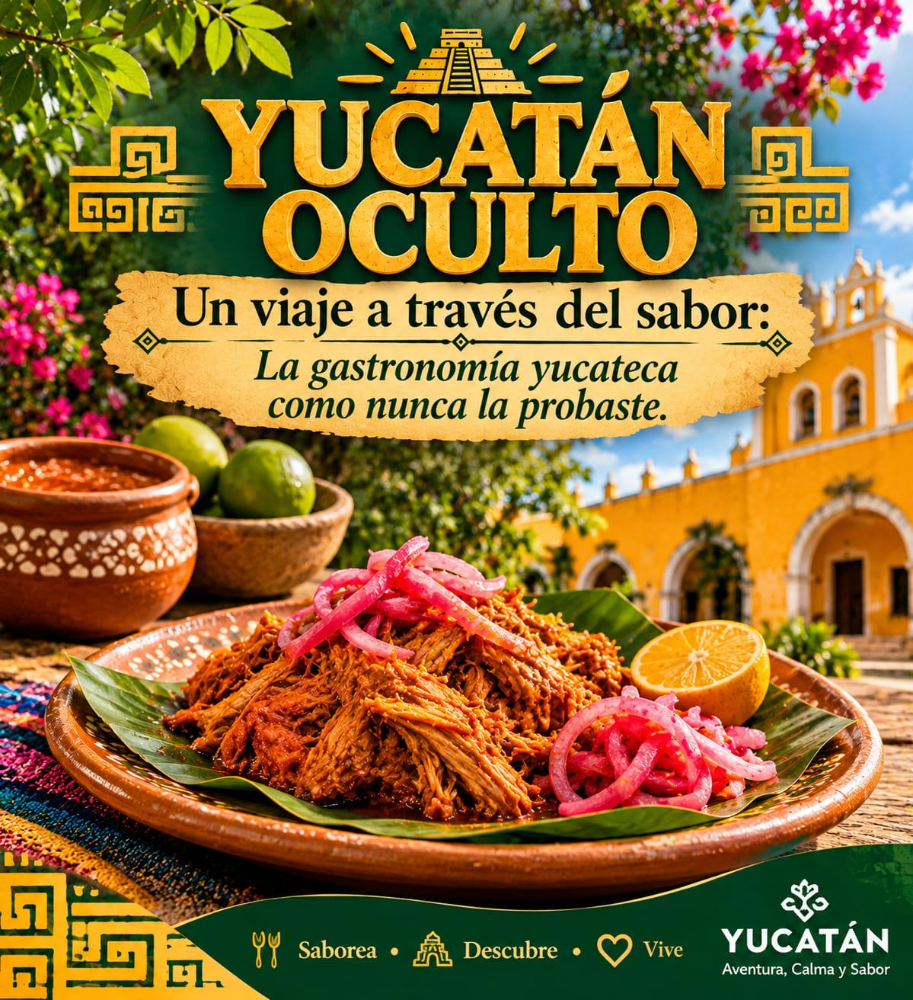
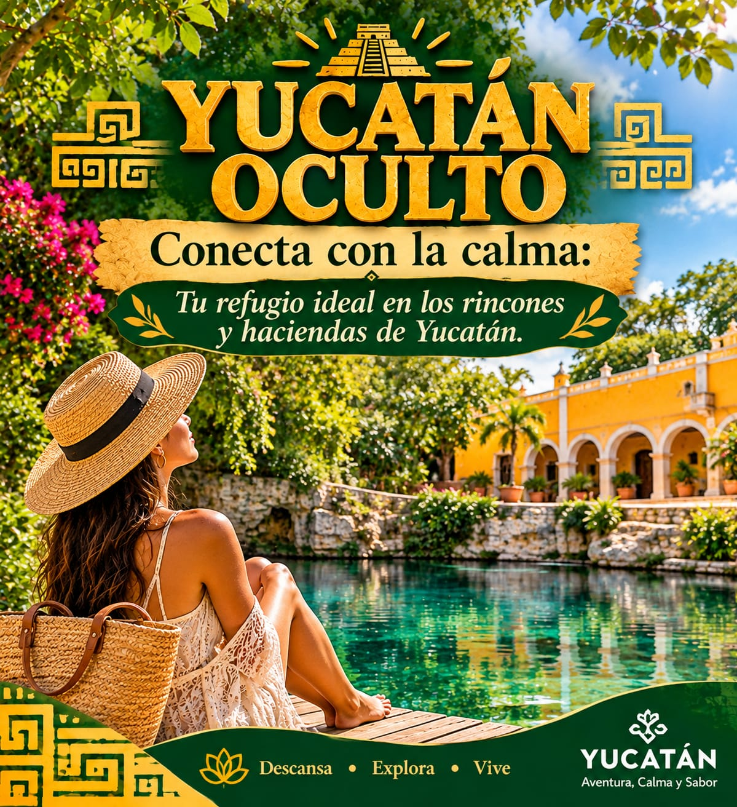

01 · Aventura
Exploradores Culturales
Ek Balam, Ruta Puuc (Kabah y Mayapán) y cenotes vírgenes con guías comunitarios y sin la saturación de Chichén Itzá.
Estaciones: Mérida Teya · Izamal · Valladolid
Redistribución inteligente de flujos turísticos mediante Ciencia de Datos, optimización intermodal con el Tren Maya e hipersegmentación digital. Una campaña que convierte identidad en experiencia y datos en demanda real.



Mientras los polos tradicionales enfrentan sobrecupo y desgaste, decenas de municipios yucatecos tienen infraestructura, cultura viva y conectividad lista para recibir viajeros de alto valor.
3,500 desde Mérida/Uxmal y 2,900 desde Chichén Itzá, aprovechando 9,200 plazas receptivas sin saturar sitios.
Costo óptimo de $557,600 MXN/día frente a más de $915,000 MXN en esquemas tradicionales de dispersión.
Probabilidad anticipada (N=10,000) de superar 210,000 pernoctas/mes en temporada alta (dic–ene) para activar pauta preventiva.
Simula el comportamiento de afluencia por temporada para activar alertas de desvío hacia destinos secundarios antes de rebasar el umbral crítico de 210,000 pernoctas.
*Nota metodológica: Indicadores calibrados con series históricas de visitantes INAH Yucatán y ocupación hotelera SEFOTUR, integrados al modelo de redistribución de 6,400 turistas/día sobre 9,200 plazas receptivas.
Cada perfil de viajero recibe una ruta conectada con estaciones del Tren Maya para evitar filas y llevar derrama a comunidades.
Ek Balam, Ruta Puuc (Kabah y Mayapán) y cenotes vírgenes con guías comunitarios y sin la saturación de Chichén Itzá.
Estaciones: Mérida Teya · Izamal · Valladolid
Cocina tradicional de horno de tierra, mercados locales y talleres culinarios en Izamal, Maní, Ticul y costa de Progreso.
Estaciones: Estación Izamal · Mérida Teya
Cenotes tranquilos, haciendas históricas y descanso real para viajeros remotos en Chocholá, Tecoh y Valladolid.
Estaciones: Maxcanú · Mérida Teya · Valladolid
Articulación del eje del Tren Maya con nodos alternos de menor presión turística.

Conecta estaciones articuladoras del Tren Maya con rutas de aventura, gastronomía y bienestar para equilibrar la afluencia diaria y asegurar una derrama económica equitativa en todo el territorio.
Contenido corto de alto alcance en TikTok e Instagram combinado con información clara sobre rutas y estaciones del Tren Maya.
Reels y TikToks en @yucatan.oculto0 mostrando rutas alternativas, cenotes tranquilos y cocina tradicional.
Guía de estaciones cercanas y opciones de movilidad para armar itinerarios sin saturación.
Impulso a prestadores locales, haciendas, mercados y experiencias comunitarias en Yucatán.